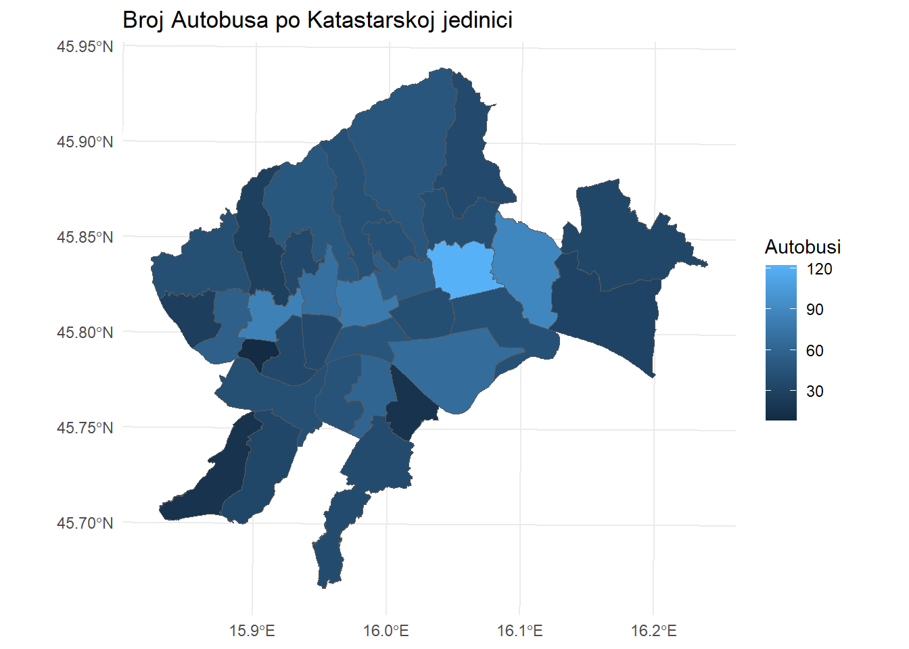
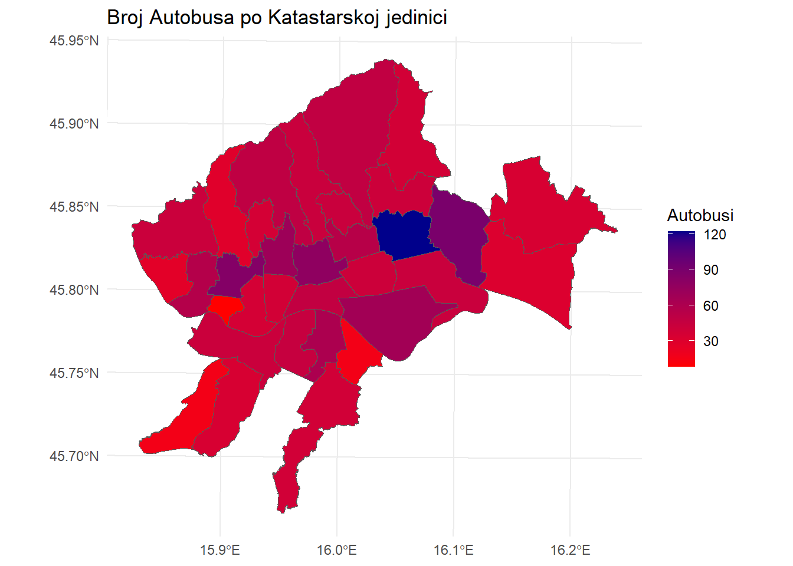

Poglavlje - 2 Prvi dio programskog koda
# Učitavanje svih potrebnih biblioteka za ovaj projekt
library(sf) # Biblioteka za rad s prostornim podacima (shapefiles, geometrija)## Warning: package 'sf' was built under R version 4.3.3## Linking to GEOS 3.11.2, GDAL 3.8.2, PROJ 9.3.1; sf_use_s2() is TRUE## Warning: package 'ggplot2' was built under R version 4.3.3## Warning: package 'dplyr' was built under R version 4.3.3##
## Attaching package: 'dplyr'## The following objects are masked from 'package:stats':
##
## filter, lag## The following objects are masked from 'package:base':
##
## intersect, setdiff, setequal, union## Warning: package 'readxl' was built under R version 4.3.2## Warning: package 'corrplot' was built under R version 4.3.3## corrplot 0.95 loaded## Warning: package 'spdep' was built under R version 4.3.3## Loading required package: spData## Warning: package 'spData' was built under R version 4.3.3## To access larger datasets in this package, install the spDataLarge
## package with: `install.packages('spDataLarge',
## repos='https://nowosad.github.io/drat/', type='source')`# Postavljanje radnog direktorija
setwd("C:/Users/dbecic/OneDrive - Grad Zagreb/Desktop/R Projects/RAnaliza/Data")
# Dohvaćanje popisa svih .shp datoteka u radnom direktoriju
shp_files <- list.files(pattern = "\\.shp$") # Pretražuje datoteke koje završavaju na .shp
# Iteracija kroz sve pronađene shapefile datoteke
for (file in shp_files) {
object_name <- tools::file_path_sans_ext(file) # Uklanja ekstenziju
assign(object_name, st_read(file)) # Dinamičko učitavanje shapefile-a
}## Reading layer `Bus' from data source
## `C:\Users\dbecic\OneDrive - Grad Zagreb\Desktop\R Projects\RAnaliza\Data\Bus.shp'
## using driver `ESRI Shapefile'
## Simple feature collection with 1875 features and 1 field
## Geometry type: POINT
## Dimension: XY
## Bounding box: xmin: 444204.4 ymin: 5053858 xmax: 478993.9 ymax: 5088970
## Projected CRS: HTRS96 / Croatia TM
## Reading layer `Katastar' from data source
## `C:\Users\dbecic\OneDrive - Grad Zagreb\Desktop\R Projects\RAnaliza\Data\Katastar.shp'
## using driver `ESRI Shapefile'
## Simple feature collection with 33 features and 5 fields
## Geometry type: POLYGON
## Dimension: XY
## Bounding box: xmin: 447310.4 ymin: 5058613 xmax: 479770.8 ymax: 5088960
## Projected CRS: HTRS96 / Croatia TM
## Reading layer `Ljekarna' from data source
## `C:\Users\dbecic\OneDrive - Grad Zagreb\Desktop\R Projects\RAnaliza\Data\Ljekarna.shp'
## using driver `ESRI Shapefile'
## Simple feature collection with 245 features and 3 fields
## Geometry type: POINT
## Dimension: XY
## Bounding box: xmin: 448365.7 ymin: 5058255 xmax: 475382.1 ymax: 5085627
## Projected CRS: HTRS96 / Croatia TM
## Reading layer `Skola' from data source
## `C:\Users\dbecic\OneDrive - Grad Zagreb\Desktop\R Projects\RAnaliza\Data\Skola.shp'
## using driver `ESRI Shapefile'
## Simple feature collection with 177 features and 5 fields
## Geometry type: POINT
## Dimension: XY
## Bounding box: xmin: 446863.2 ymin: 5058245 xmax: 475496 ymax: 5088670
## Projected CRS: HTRS96 / Croatia TM
## Reading layer `Tramvaj' from data source
## `C:\Users\dbecic\OneDrive - Grad Zagreb\Desktop\R Projects\RAnaliza\Data\Tramvaj.shp'
## using driver `ESRI Shapefile'
## Simple feature collection with 260 features and 2 fields
## Geometry type: POINT
## Dimension: XY
## Bounding box: xmin: 452779.2 ymin: 5070942 xmax: 467198.9 ymax: 5080219
## Projected CRS: HTRS96 / Croatia TM
## Reading layer `Vrtic' from data source
## `C:\Users\dbecic\OneDrive - Grad Zagreb\Desktop\R Projects\RAnaliza\Data\Vrtic.shp'
## using driver `ESRI Shapefile'
## Simple feature collection with 329 features and 6 fields
## Geometry type: POINT
## Dimension: XY
## Bounding box: xmin: 448757.4 ymin: 5058059 xmax: 475318.9 ymax: 5085856
## Projected CRS: HTRS96 / Croatia TM# Prikaz podataka
summary(Katastar) # Prikazuje osnovne informacije o shapefile objektu (zamijenite 'Katastar')## OBJECTID KO_NAZIV SHAPE_Leng SHAPE_Area
## Min. : 1.00 Length:33 Min. : 7540 Min. : 2730871
## 1st Qu.:13.00 Class :character 1st Qu.:14963 1st Qu.: 7133608
## Median :29.00 Mode :character Median :18051 Median : 8660181
## Mean :28.42 Mean :20283 Mean :12265300
## 3rd Qu.:43.00 3rd Qu.:25139 3rd Qu.:14825456
## Max. :56.00 Max. :39142 Max. :37871238
## KEY geometry
## Min. : 1 POLYGON :33
## 1st Qu.: 9 epsg:3765 : 0
## Median :17 +proj=tmer...: 0
## Mean :17
## 3rd Qu.:25
## Max. :33# 3. Vizualizacija prostornih podataka
# plot() prikazuje geometriju prostornih slojeva koristeći osnovne alate u R-u
# "geometry" je Kljuc stupca u sf objektu koji sadrži informacije o geometriji
plot(Katastar["geometry"], main = "KO_Kljuc") # Dodaje naslov grafu koristeći main = "Naslov"
# 4. Učitavanje statističkih podataka iz Excel datoteke
# Definira Kljuc Excel datoteke koja sadrži dodatne informacije o nekretninama
excel_data <- "Nekretnine_Izvjesce.xlsx"
# Koristi funkciju read_excel() za učitavanje podataka iz Excel datoteke u tablični format
Nektretnine <- read_excel(excel_data)
# 5. Spajanje prostornih podataka s tabličnim podacima
# Funkcija left_join() spaja dva podatkovna okvira na temelju zajedničkog atributa
# "KEY" je zajednički ključ koji povezuje podatke iz Excel datoteke i shapefile-a
Katastar <- Katastar %>%
left_join(Nektretnine, by = "KEY")
# 6. Računanje broja objekata u katastarskim općinama
# Dodaje nove stupce u podatke koji broje objekte unutar svake katastarske općine
Katastar <- Katastar %>%
mutate(
# Koristi funkciju st_intersects() za identifikaciju presjeka geometrija
# lengths() računa broj objekata koji se nalaze unutar svake općine
Count_Bus = lengths(st_intersects(Katastar, Bus)), # Broji autobuse
Count_Ljekarna = lengths(st_intersects(Katastar, Ljekarna)), # Broji ljekarne
Count_Skola = lengths(st_intersects(Katastar, Skola)), # Broji škole
Count_Tramvaj = lengths(st_intersects(Katastar, Tramvaj)), # Broji tramvaje
Count_Vrtic = lengths(st_intersects(Katastar, Vrtic)) # Broji vrtiće
)
# 7. Osnovna vizualizacija broja autobusa po katastarskim jedinicama
# Koristi ggplot2 za vizualizaciju prostornih podataka
ggplot(Katastar) +
geom_sf(aes(fill = Count_Bus)) + # Boji prostorne jedinice prema broju autobusa
theme_minimal() + # Primjenjuje minimalistički stil grafa
labs(title = "Broj Autobusa po Katastarskoj jedinici", fill = "Autobusi") # Dodaje naslov i legendu
# 8. Vizualizacija s prilagođenim gradijentom boja
# Dodaje gradijent boja od crvene (malo autobusa) do tamnoplave (mnogo autobusa)
ggplot(Katastar) +
geom_sf(aes(fill = Count_Bus)) +
scale_fill_gradient(low = "red", high = "darkblue") +
theme_minimal() +
labs(
title = "Broj Autobusa po Katastarskoj jedinici",
fill = "Autobusi"
)
# Linearni model je jednostavna metoda koja koristi jednu varijablu, poput vremena, za predviđanje trenda
# Linearni model za projekciju cijena
# Cilj: Predviđanje buduće cijene na temelju prošlih cijena.
# Ulazne varijable: Samo godine (2021, 2022, 2023).
# Rezultat: Model daje cijenu za 2024. na temelju povijesnog trenda.
# Ograničenje: Gleda samo prošle godine i ignorira druge faktore (npr. škole, tramvaje, vrtiće).
# 9. Projekcija cijena za 2024. godinu
# Dodaje novi stupac koji predviđa cijene nekretnina za 2024. godinu koristeći linearni model
Katastar <- Katastar %>%
rowwise() %>% # Omogućuje da se operacije izvode red po red
mutate(
MEDIJALNA_CIJENA_EUR_24 = {
# Definira ulazne podatke za regresijski model (godine i cijene)
years <- c(2021, 2022, 2023)
prices <- c(MEDIJALNA_CIJENA_EUR_21, MEDIJALNA_CIJENA_EUR_22, MEDIJALNA_CIJENA_EUR_23)
# Kreira linearni model koji predviđa cijenu na temelju godina
fit <- lm(prices ~ years)
# Predviđa cijenu za 2024. godinu
predict(fit, newdata = data.frame(years = 2024))
}
) %>%
ungroup() # Uklanja redno grupiranje